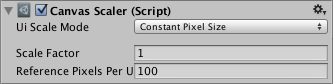

Canvas Scaler 控制 Canvas 内 UI 元素的整体缩放和像素密度，影响其下的所有内容，包括字体大小和图像边框。

属性（Properties）
| 属性 | 功能说明 |
|---|---|
| UI 缩放模式（UI Scale Mode） | 决定 Canvas 内 UI 元素的缩放方式。 |
| 恒定像素尺寸（Constant Pixel Size） | 无论屏幕尺寸如何，UI 元素都保持相同的像素尺寸。 |
| 随屏幕尺寸缩放（Scale With Screen Size） | 屏幕越大，UI 元素也越大。 |
| 恒定物理尺寸（Constant Physical Size） | 无论屏幕尺寸和分辨率如何，UI 元素都保持相同的物理尺寸。 |
Constant Pixel Size（恒定像素尺寸）设置：
| 属性 | 功能说明 |
|---|---|
| 缩放系数（Scale Factor） | 按此系数缩放 Canvas 内全部 UI 元素。 |
| 参考每单位像素数（Reference Pixels Per Unit） | 若 Sprite 的 Pixels Per Unit 与该值相同，则 Sprite 的一个像素对应 UI 中一个单位。 |
Scale With Screen Size（随屏幕尺寸缩放）设置：
| 属性 | 功能说明 |
|---|---|
| 参考分辨率（Reference Resolution） | 设计 UI 布局时采用的参考分辨率。实际屏幕分辨率更大时放大 UI，更小时缩小 UI。 |
| 屏幕匹配模式（Screen Match Mode） | 当当前分辨率的宽高比与参考分辨率不一致时，用于缩放 Canvas 区域的模式。 |
| 匹配宽度或高度（Match Width or Height） | 以宽度、高度或两者之间的混合比例为基准缩放 Canvas 区域。 |
| 扩展（Expand） | 沿水平或垂直方向扩展 Canvas 区域，使 Canvas 尺寸不会小于参考尺寸。 |
| 收缩（Shrink） | 沿水平或垂直方向裁剪 Canvas 区域，使 Canvas 尺寸不会大于参考尺寸。 |
| 匹配比例（Match） | 决定以宽度、高度还是两者之间的混合比例作为缩放基准。 |
| 参考每单位像素数（Reference Pixels Per Unit） | 若 Sprite 的 Pixels Per Unit 与该值相同，则 Sprite 的一个像素对应 UI 中一个单位。 |
Constant Physical Size（恒定物理尺寸）设置：
| 属性 | 功能说明 |
|---|---|
| 物理单位（Physical Unit） | 用于指定位置和尺寸的物理单位。 |
| 备用屏幕 DPI（Fallback Screen DPI） | 无法获知屏幕 DPI 时采用的备用 DPI。 |
| 默认精灵 DPI（Default Sprite DPI） | 当 Sprite 的 Pixels Per Unit 与 Reference Pixels Per Unit 一致时，使用的每英寸像素数。 |
| 参考每单位像素数（Reference Pixels Per Unit） | 若 Sprite 的 Pixels Per Unit 与该值相同，其 DPI 将与 Default Sprite DPI 一致。 |
World Space Canvas 设置（Canvas 的 Render Mode 为 World Space 时显示）：
| 属性 | 功能说明 |
|---|---|
| 动态每单位像素数（Dynamic Pixels Per Unit） | UI 中动态生成位图所使用的每单位像素数，例如 Text。 |
| 参考每单位像素数（Reference Pixels Per Unit） | 若 Sprite 的 Pixels Per Unit 与该值相同，则 Sprite 的一个像素对应世界空间中的一个单位。Reference Pixels Per Unit 为 1 时，直接使用 Sprite 的 Pixels Per Unit 值。 |
详细说明（Details）
对于 Screen Space - Overlay 或 Screen Space - Camera Canvas，UI Scale Mode 可设为 Constant Pixel Size、Scale With Screen Size 或 Constant Physical Size。
恒定像素尺寸（Constant Pixel Size）
此模式以屏幕像素指定 UI 元素的位置和尺寸，也是未添加 Canvas Scaler 时 Canvas 的默认行为。通过 Canvas Scaler 的 Scale Factor，可以给整个 Canvas 施加恒定缩放。
随屏幕尺寸缩放（Scale With Screen Size）
此模式按指定参考分辨率的像素来设置位置和尺寸。当前屏幕分辨率更大时，Canvas 仍采用参考分辨率对应的逻辑尺寸，但会放大以适应屏幕；当前分辨率更小时，则相应缩小。
如果当前屏幕与参考分辨率的宽高比不同，分别缩放两个轴会造成通常不希望出现的非均匀缩放。原文称 ReferenceResolution 组件会调整 Canvas 分辨率，使其偏离参考分辨率但保持屏幕宽高比；偏离方式可通过 Screen Match Mode 控制。
恒定物理尺寸（Constant Physical Size）
此模式使用毫米、Point 或 Pica 等物理单位指定 UI 的位置和尺寸，依赖设备正确报告屏幕 DPI。可为不报告 DPI 的设备指定备用值。
世界空间（World Space）
对于 World Space Canvas，Canvas Scaler 用来控制 UI 元素的像素密度。
提示（Hints）
- Designing UI for Multiple Resolutions 提供逐步说明，介绍如何配合使用 Rect Transform Anchoring 和 Canvas Scaler，让 UI 适应不同分辨率和宽高比。